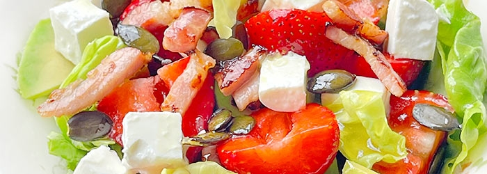

SAŁATKA Z TRUSKAWKAMI, AWOKADO I BOCZKIEM
Boczek pokroić w drobną kostkę lub paseczki włożyć na patelnię. Podgrzewać na małym ogniu ok. 10 minut, aż się wytopi a następnie zrumieni.Na talerzach lub w salaterkach rozłożyć umytą, osuszoną i pokrojoną na paski sałatę.Dodać obrane i pokrojone na kawałeczki awokado oraz umyte i pokrojone truskawki.Posypać pokrojonym w kosteczkę serem i boczkiem. Polać sosem (składniki wymieszać rózgą na jednolitą emulsję) i posypać pestkami dyni.Przed podaniem można delikatnie doprawić solą oraz pieprzem.
PIECZONY NALEŚNIK DUTCH BABY Z JABŁKAMI
Jajka ogrzać (np. włożyć do garnka z ciepłą wodą) lub wyjąć wcześniej z lodówki. Mleko delikatnie podgrzać lub ogrzać w temp. pokojowej.Piekarnik nagrzać do 220 stopni C, w środku piekarnika nagrzewać również naczynie żaroodporne lub patelnię żaroodporną czy inną formę np. na tartę, średnica ok. 20 cm.Sklarować 4 łyżki masła (podgrzać w rondelku, zebrać i usunąć pianę). Jabłko obrać, pokroić na 8 - 10 kawałków (plasterków)Wysunąć kratkę z rozgrzanym naczyniem z piekarnika, wlać 2 łyżki sklarowanego masła, następnie wlać powoli zmiksowane składniki na omlet. Rozłożyć kawałki jabłek i zamknąć piekarnik. Piec bez przykrycia przez ok. 20 minut, aż omlet miejscami urośnie i będzie dobrze zrumieniony oraz chrupiący.
SERNIK Z GRUSZKAMI W IMBIRZE I MUSEM CZEKOLADOWYM
Gruszki obrać, pokroić na ćwiartki, usunąć gniazda nasienne. Każdą ćwiartkę przekroić jeszcze wzdłuż na pół. Rozgrzać dużą patelnię na średnim ogniu, wsypać cukier i potrząsając patelnię rozprowadzić go po całej powierzchni. Postawić z powrotem na ogniu i podgrzewać bez mieszania przez około 1 minutę lub do czasu aż cukier zacznie się rozpuszczać i zmieni kolor na ciemny brąz (długość podgrzewania zależy od stopnia rozgrzania patelni, grubości dna patelni, wielkości ognia).Dodać gruszki oraz imbir i smażyć przez ok. 10-15 minut aż gruszki będą złote i pokryją się gęstym syropem, w międzyczasie skrapiać sokiem z cytryny oraz 1-2 razy gruszki przewrócić. Gruszki wyłożyć na masę serow